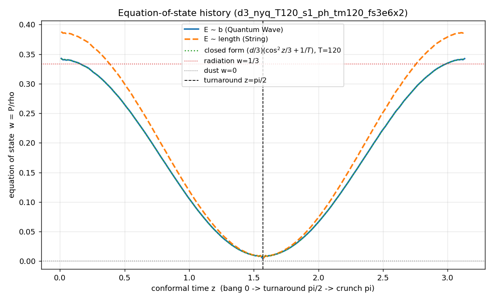
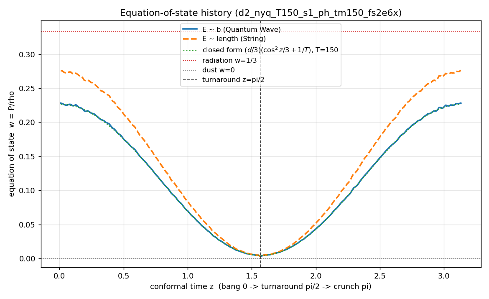

w(z) over the whole loop (Chris's question): the full-spectrum universe runs radiation → dust → radiation, with a closed form
Chris asked what w looks like across conformal time, not just at the turnaround. Answer: the full-spectrum model runs the standard cosmological ordering. The physical velocity per axis is Σ ajbjcos(bjz + fj) + a₁cos z: away from the turnaround the comoving-offset term a₁cos z dominates (⟨a₁²⟩ = ⅓), while the ~T wiggle terms contribute an incoherent O(1/T) floor. That gives the closed form w(z) = (d/3)(cos²z/3 + 1/T): radiation-like w → d/9 at the bang and crunch (→ exactly ⅓ in 3+1 as T → ∞), cooling on a cos² profile to the w = d/(6T) dust floor at the turnaround.


- The few-term model never did this. Its w(z) was resolution-independent (w ≈ 0.07–0.19 depending on ensemble/dictionary) with no radiation limit. The full-spectrum model instead reproduces the radiation → matter cooling sequence of standard cosmology from pure packing statistics, with no fitted parameters.
- Dictionary robustness. E ~ b and E ~ arc-length agree to 4 decimals at the turnaround and within ~13% at the endpoints (the arc-length weight correlates mildly with endpoint speed).